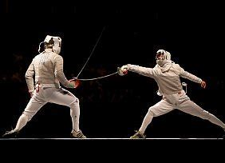
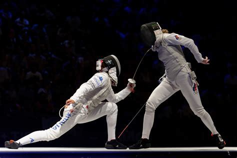

Of couse there aren't just these little amount of informations, however, i also fence, although i don't really like this activity, but it's still one of the strength that i have.

Fencing is a combat sport that features sword fighting. The three disciplines of modern fencing are the foil, the épée, and the sabre (also saber); each discipline uses a different kind of blade, which shares the same name, and employs its own rules. Most competitive fencers specialize in one discipline. The modern sport gained prominence near the end of the 19th century and is based on the traditional skill set of swordsmanship. The Italian school altered the historical European martial art of classical fencing, and the French school later refined that system. Scoring points in a fencing competition is done by making contact with an opponent.
The 1904 Olympics Games featured a fourth discipline of fencing known as singlestick, but it was dropped after that year and is not a part of modern fencing. Competitive fencing was one of the first sports to be featured in the Olympics and, along with athletics, cycling, swimming, and gymnastics, has been featured in every modern Olympics.
